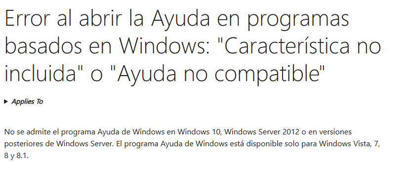

Mercury by Manuel Munguia Rubio
Mercury Mail Transport System (Mercury/32) es un servidor de correo para Windows desarrollado por David Harris, autor también de Pegasus Mail, distribuido como donationware para uso personal y shareware en entornos comerciales desde enero de 2007. Funciona mediante una arquitectura modular basada en daemons independientes—MercuryS (SMTP entrante), MercuryC (SMTP saliente), MercuryP (POP3), MercuryI (IMAP) y MercuryE (listas de distribución)—permitiendo activar solo los servicios necesarios y configurar retransmisiones, límites de tamaño y filtros sin afectar al resto del sistema. Soporta plenamente los protocolos SMTP (RFC 5321), POP3 e IMAP, autenticación SASL, cifrado TLS/SSL y comandos extendidos, así como mecanismos de filtrado antispam DNSBL y antivirus mediante integración milter. Su consola gráfica facilita la administración mostrando en tiempo real conexiones activas, colas de mensajes y registros exportables, y permite integrarse con clientes como Pegasus Mail, Thunderbird u Outlook, así como con plataformas de desarrollo web locales tipo XAMPP. Es popular en redes pequeñas y medianas, instituciones educativas y ONG gracias a su facilidad de instalación (menos de un minuto) y flexibilidad, y cuenta con comunidades en SourceForge y foros técnicos donde encontrar complementos, scripts de automatización y soluciones a problemas comunes.
-
Localización del servidor.
-
Ayuda del servidor.

-
Muestre el archivo de configuración de forma grafica.
-
Muestre e archivo de configuración en PS usando more. comando: more mercury.ini

-
Inicie el servidor mediante XAMPP
-
Detenga el servidor mediante XAMPP
-
Inicie el servidor mediante COMANDO CMD compruebe en interfaz de XAMPP

-
Detenga el servidor mediante comando CMD compruebe en interfaz de XAMPP
Nota: Es importante cerrar el servidor en otra terminal para que no cierre en rojo, para que no falle XAMPP